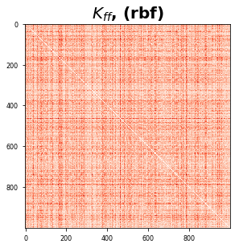

Distances
Contents
Distances¶
Resources
High-Performance Computation in Python | Numpy - Blog
\[d(u,v) = \sqrt{\sum_{i=1}^N(u_i - v_i)^2}\]
#@title Packages
import functools
import jax
import jax.numpy as jnp
import numpy as onp
from sklearn.metrics.pairwise import euclidean_distances, haversine_distances
from sklearn import datasets
# Plotting libraries
import matplotlib.pyplot as plt
plt.style.use(['seaborn-paper'])
#@title Plot Functions
def plot_kernel_mat(K):
# plot
plt.figure()
plt.imshow(K, cmap='Reds')
plt.title(r'$K_{ff}$, (rbf)', fontsize=20, weight='bold')
plt.tight_layout()
plt.show()
#@title Data
def get_1d_data(N=30, sigma_inputs=0.15, sigma_obs=0.15, N_test=400):
onp.random.seed(0)
X = jnp.linspace(-10, 10, N)
# Y = X + 0.2 * np.power(X, 3.0) + 0.5 * np.power(0.5 + X, 2.0) * np.sin(4.0 * X)
Y = jnp.sin(1.0 * jnp.pi / 1.6 * jnp.cos(5 + .5 * X))
Y += sigma_obs * onp.random.randn(N)
X += sigma_inputs * onp.random.randn(N)
Y -= jnp.mean(Y)
Y /= jnp.std(Y)
X_test = jnp.linspace(-11, 11, N_test)
X_test += sigma_inputs * onp.random.randn(N_test)
X = X[:, None]
X_test = X[:, None]
assert X.shape == (N,1)
assert Y.shape == (N,)
return X, Y, X_test
def get_2d_data(N=30, sigma_obs=0.15, N_test=400):
onp.random.seed(0)
X1 = jnp.linspace(-10, 10, N)
X2 = jnp.linspace(-5, 2, N)
# Y = X + 0.2 * np.power(X, 3.0) + 0.5 * np.power(0.5 + X, 2.0) * np.sin(4.0 * X)
Y = jnp.sin(1.0 * jnp.pi / 1.6 * jnp.cos(5 + .5 * X1)) + jnp.exp(X2)
Y += sigma_obs * onp.random.randn(N)
Y -= jnp.mean(Y)
Y /= jnp.std(Y)
X1_test = jnp.linspace(-11, 11, N_test)
X2_test = jnp.linspace(-6, 4, N_test)
X = jnp.vstack((X1,X2)).T
X_test = jnp.vstack((X1_test,X2_test)).T
assert X.shape == (N,2)
assert Y.shape == (N,)
return X, Y, X_test
# Get Data
X, Y, X_test = get_1d_data(100, sigma_inputs=0.0, sigma_obs=0.1, N_test=100)
/home/emmanuel/.conda/envs/jax_py38/lib/python3.8/site-packages/jax/lib/xla_bridge.py:123: UserWarning: No GPU/TPU found, falling back to CPU.
warnings.warn('No GPU/TPU found, falling back to CPU.')
Squared Euclidean Distance¶
#@title Kernel Functions
# Squared Euclidean Distance Formula
# @jax.jit
# def sqeuclidean_distance(x, y):
# z = x - y
# return jnp.einsum("i,i->", z, z)
@jax.jit
def sqeuclidean_distance(x, y):
return jnp.linalg.norm(x - y)**2
# return jnp.sum( (x - y) ** 2)
# @jax.jit
# def sqeuclidean_distance_vect(x, y):
# return jnp.linalg.norm(x - y, axis=1)**2
# return jnp.sum( (x - y) ** 2)
# @jax.jit
# def sqeuclidean_distance(x, y):
# return jnp.sum( (x - y) ** 2)
# @jax.jit
def gram(func, x, y):
return jax.vmap(lambda x1: jax.vmap(lambda y1: func(x1, y1))(x))(y)
# X, Y, X_test = get_2d_data(1_000, sigma_obs=0.1)
X, y = datasets.make_regression(1_000, 10)
X_ = jnp.array(X)
type(X_), X_.shape
(jax.interpreters.xla.DeviceArray, (1000, 10))
test_X = X.copy()#[:2, :]
test_Y = X.copy() #[:2, :]
dist_x_sk = euclidean_distances(
onp.array(test_X),
onp.array(test_Y),
squared=True
)
euclidean_mat = jax.jit(functools.partial(gram, sqeuclidean_distance))
dist_x = euclidean_mat(
test_X,
test_Y
)
onp.testing.assert_array_almost_equal(onp.array(dist_x), dist_x_sk, decimal=1e-5)
plot_kernel_mat(dist_x)

Speed Test¶
%timeit _ = euclidean_distances(X, X, squared=True)
%timeit _ = euclidean_mat(X_, X_)
6.75 ms ± 58.2 µs per loop (mean ± std. dev. of 7 runs, 100 loops each)
491 µs ± 3.16 µs per loop (mean ± std. dev. of 7 runs, 1000 loops each)